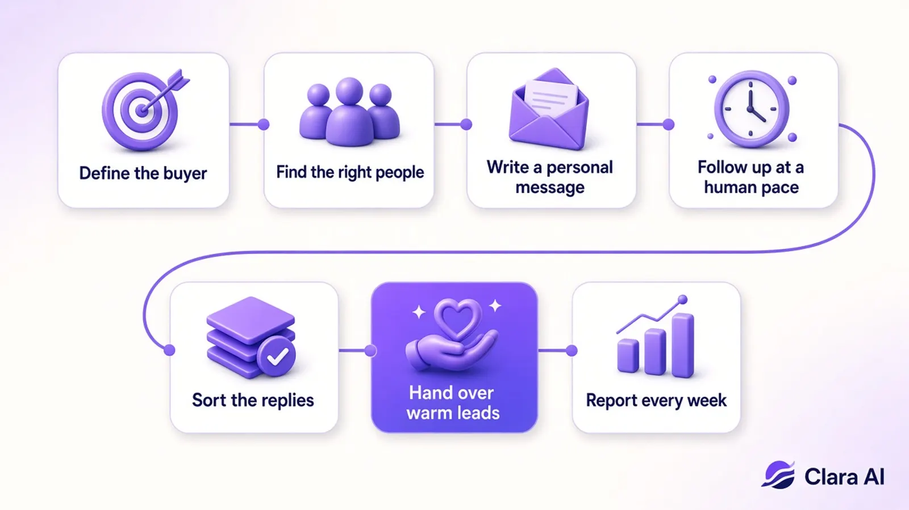

An AI agent for LinkedIn lead generation is an AI that prospects on LinkedIn for you: it finds the decision makers who match your ideal customer, sends each one a personal message, follows up, and alerts you on WhatsApp when someone is ready to talk. Your team only joins warm conversations, so LinkedIn turns into booked calls instead of a daily chore.
LinkedIn is where most B2B buyers can be found by job title, industry and company size. The problem is not access. It is time. Good prospecting means researching each person, writing a message that mentions something real about them, following up two or three times and answering replies the same day. A founder or sales head who is busy closing deals cannot do that every day, and the pipeline dries up the moment they stop.
An AI agent fixes the consistency problem. It works every day, at a steady human pace, and it never forgets a follow-up. That steady effort is what turns LinkedIn from an occasional burst of activity into a reliable source of first calls.

| What matters | Automation tool | AI lead generation agent |
|---|---|---|
| Who builds the prospect list | Your team | The agent |
| Who writes the messages | Your team, one template for many | The agent, personal for each prospect |
| Who reads and sorts replies | Your team | The agent, then hands over buyers |
| Your team's time each week | High | Low |
| Where you hear about leads | Inside the tool | On WhatsApp |
An automation tool only automates the clicking. An AI agent also does the thinking: who to contact, what to say and which replies matter. For a full comparison of the options on the market, read our guide to the best AI LinkedIn outreach agents, or compare software with outsourcing in LinkedIn automation vs a LinkedIn agency.
It is when the agent behaves like a careful person. That means modest daily volumes, personal messages instead of copy-paste blasts, pauses between actions and stopping as soon as someone replies. LinkedIn's page on prohibited software and extensions makes clear that spam-style automation can get accounts restricted, so ask any vendor exactly how they pace activity before you start.
Track the funnel, not the activity. Messages sent is not a result. Look at how many of the right people were reached, how many accepted, how many replied, how many conversations were with real buyers and how many calls you booked. Compare a full month with the month before.
That is how we report our own work. For Haique Surfaces, the agent reached 345 people as of 21 Oct 2026, 107 accepted and 14 replied. For Sanjeet Ray, it turned 149 invites into 43 connections, 12 conversations and 3 warm leads in October 2026. These are honest, dated numbers you can hold against your own funnel. Results depend on your offer and market, so we never promise a fixed number of meetings.
It is not the right choice for consumer products sold to the public, one-off campaigns or teams that only want posts and branding. It is also not a fit if you have no budget for a paid monthly service. It works best when one new client is worth a meaningful amount, so a handful of good conversations each month pays for itself.
To see how LinkedIn outreach fits with follow-up, calling and reporting, read our guide to AI agents for B2B sales teams. If you also want buyers to find you on Google and in AI search, our AI SEO Agent publishes a helpful post every day, and we build custom AI agents around any other process.
Clara AI is a team of 14 that builds and runs AI agents for 19 businesses. Book a free demo and we will show you the agent working on your own target buyers. If we are not a fit, we will tell you.